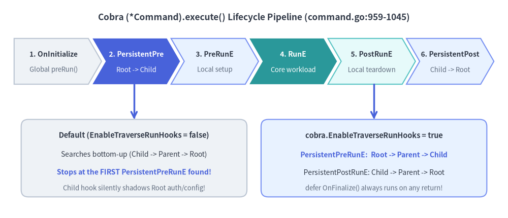
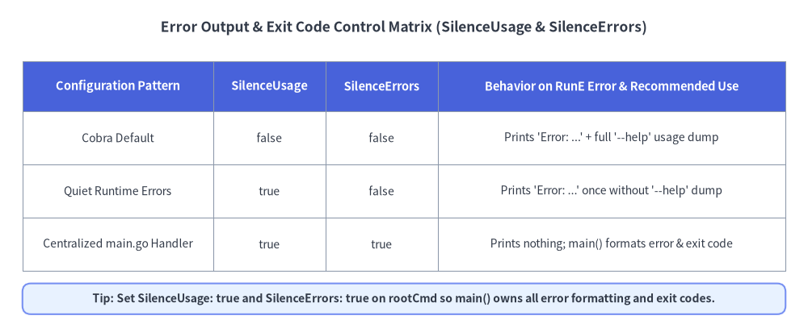

Lifecycle Hooks, Errors & Context Signals
Understanding the exact execution order inside (*Command).execute() (command.go:905-1045) is essential for building reliable enterprise CLIs. Without it, engineers routinely encounter three classic pitfalls: root PersistentPreRunE hooks silently skipped when a subcommand defines its own hook, runtime errors dumping 40 lines of --help usage text, and Ctrl-C (SIGINT) leaving orphaned remote operations.

Source Code
from drawlib.canvas import save, setup
from drawlib.lines import line
from drawlib.shapes import rectangle
from drawlib.smartarts import ChevronProcess
from drawlib.styles import Styles
from drawlib.text import text
setup(width=144, height=62)
text(
(72, 57),
"Cobra (*Command).execute() Lifecycle Pipeline (command.go:959-1045)",
style=Styles.DarkBold.patch(text_size=12.5),
)
stages = ChevronProcess(
style=Styles.Neutral,
text_style=Styles.DarkBold.patch(text_size=10.0),
description_style=Styles.Muted.patch(text_size=9.5),
corner_angle=60.0,
spacing=1.2,
flat_left_end=True,
)
stages.add("1. OnInitialize", description="Global preRun()")
stages.add(
"2. PersistentPre",
description="Root -> Child",
style=Styles.PrimaryFlat,
text_style=Styles.WhiteBold.patch(text_size=10.0),
description_style=Styles.White.patch(text_size=9.5),
)
stages.add("3. PreRunE", description="Local setup", style=Styles.PrimaryNeutral)
stages.add(
"4. RunE",
description="Core workload",
style=Styles.SecondaryFlat,
text_style=Styles.WhiteBold.patch(text_size=10.0),
description_style=Styles.White.patch(text_size=9.5),
)
stages.add("5. PostRunE", description="Local teardown", style=Styles.SecondaryNeutral)
stages.add("6. PersistentPost", description="Child -> Root", style=Styles.PrimaryNeutral)
stages.draw(xy=(4, 38), width=136, height=13)
# Bottom comparison: Default vs EnableTraverseRunHooks = true
rectangle((38, 17), width=64, height=22, style=Styles.Neutral.patch(shape_r=2.0))
text((38, 23.5), "Default (EnableTraverseRunHooks = false)", style=Styles.DarkBold.patch(text_size=10.5))
text((38, 18.0), "Searches bottom-up (Child -> Parent -> Root)", style=Styles.Dark.patch(text_size=10.0))
text((38, 13.0), "Stops at the FIRST PersistentPreRunE found!", style=Styles.PrimaryBold.patch(text_size=10.0))
text((38, 8.5), "Child hook silently shadows Root auth/config!", style=Styles.Muted.patch(text_size=9.5))
rectangle((106, 17), width=64, height=22, style=Styles.PrimaryNeutral.patch(shape_r=2.0))
text((106, 23.5), "cobra.EnableTraverseRunHooks = true", style=Styles.DarkBold.patch(text_size=10.5))
text((106, 18.0), "PersistentPreRunE: Root -> Parent -> Child", style=Styles.PrimaryBold.patch(text_size=10.0))
text((106, 13.0), "PersistentPostRunE: Child -> Parent -> Root", style=Styles.Dark.patch(text_size=10.0))
text((106, 8.5), "defer OnFinalize() always runs on any return!", style=Styles.Muted.patch(text_size=9.5))
line((38, 38), (38, 28), arrow_head="->", style=Styles.PrimaryBold)
line((106, 38), (106, 28), arrow_head="->", style=Styles.PrimaryBold)
save()
1. Exact Sequence in (*Command).execute() (command.go)
Once ExecuteC() resolves the target leaf cmd and strips flags via c.ParseFlags(a), cmd.execute(flags) runs the following sequence in strict order:
| Step | Method / Hook Invoked | Source Line (command.go) |
Failure / Short-Circuit Behavior |
|---|---|---|---|
| 1 | c.preRun() (cobra.OnInitialize callbacks) |
Line 959 |
Runs before ValidateArgs; defer c.postRun() (OnFinalize) is armed at Line 961. |
| 2 | c.ValidateArgs(argWoFlags) (cmd.Args) |
Line 968 |
Returns immediately on invalid positional args; skips all *Run* hooks. |
| 3 | PersistentPreRunE / PersistentPreRun |
Lines 972–998 |
Runs nearest ancestor (or Root -> Child if EnableTraverseRunHooks == true). |
| 4 | PreRunE / PreRun |
Lines 999–1005 |
Runs target command's local pre-run hook; aborts before flag group validation on error. |
| 5 | ValidateRequiredFlags() & ValidateFlagGroups() |
Lines 1007–1012 |
Enforces MarkFlagRequired and flag_groups.go constraints right before RunE. |
| 6 | RunE / Run |
Lines 1014–1020 |
Executes the primary command action. |
| 7 | PostRunE / PostRun |
Lines 1021–1027 |
Runs only if RunE returned nil. |
| 8 | PersistentPostRunE / PersistentPostRun |
Lines 1028–1042 |
Runs only if RunE and PostRunE returned nil (Child -> Root). |
| 9 | defer c.postRun() (cobra.OnFinalize callbacks) |
Line 961 |
Always runs via defer whenever step 1 was reached, even if RunE failed! |
Chaining Parent Hooks with cobra.EnableTraverseRunHooks = true
By default (EnableTraverseRunHooks = false), Cobra climbs from c up to Root() and breaks out of the loop as soon as it executes the first non-nil PersistentPreRunE (command.go:989). In a multi-level CLI (root -> cluster -> node -> drain), if root initializes telemetry/Viper in PersistentPreRunE and cluster initializes a Kubernetes client in its own PersistentPreRunE, root's hook will never run!
Always enable cobra.EnableTraverseRunHooks = true in multi-level CLIs so parent hooks compose predictably like middleware:
func init() {
// Execute PersistentPreRunE top-down (Root -> Parent -> Child)
// and PersistentPostRunE bottom-up (Child -> Parent -> Root)
cobra.EnableTraverseRunHooks = true
}
2. Taming Error Output: SilenceUsage, SilenceErrors & Exit Codes
By default, when RunE returns any error—even a backend database timeout or HTTP 503—Cobra performs two actions inside ExecuteC() (command.go:1149-1160):
- Prints
Error: <err.Error()>toc.ErrOrStderr()(unlessSilenceErrors: true). - Prints the entire
--helpusage text toc.ErrOrStderr()(unlessSilenceUsage: true).
If your main() function also logs the returned error (if err != nil { fmt.Fprintln(os.Stderr, err) }), users see the error message twice separated by a wall of irrelevant --help text!

Source Code
from drawlib.canvas import save, setup
from drawlib.shapes import rectangle
from drawlib.smartarts import Table
from drawlib.styles import Styles
from drawlib.text import text
setup(width=144, height=58)
text(
(72, 53),
"Error Output & Exit Code Control Matrix (SilenceUsage & SilenceErrors)",
style=Styles.DarkBold.patch(text_size=12.5),
)
tbl = Table(
cell_style=Styles.White,
text_style=Styles.Dark.patch(text_size=10.0),
header_cell_style=Styles.PrimaryFlat,
header_text_style=Styles.WhiteBold.patch(text_size=10.5),
border_style=Styles.MutedThin,
)
rows = [
["Configuration Pattern", "SilenceUsage", "SilenceErrors", "Behavior on RunE Error & Recommended Use"],
[
"Cobra Default",
"false",
"false",
"Prints 'Error: ...' + full '--help' usage dump",
],
[
"Quiet Runtime Errors",
"true",
"false",
"Prints 'Error: ...' once without '--help' dump",
],
[
"Centralized main.go Handler",
"true",
"true",
"Prints nothing; main() formats error & exit code",
],
]
tbl.draw_flexible(
xy=(4, 47),
column_widths=[34, 20, 20, 62],
row_heights=[9, 9.5, 9.5, 9.5],
data=rows,
align="top_left",
)
rectangle((72, 4.5), width=136, height=5.5, style=Styles.PrimaryNeutral.patch(shape_r=1.5))
text(
(72, 4.5),
"Tip: Set SilenceUsage: true and SilenceErrors: true on rootCmd so main() owns all error formatting and exit codes.",
style=Styles.DarkBold.patch(text_size=10.0),
)
save()
3. Graceful SIGINT / SIGTERM Cancellation with ExecuteContext
Every cobra.Command carries a context.Context accessible via cmd.Context(). By wiring signal.NotifyContext into rootCmd.ExecuteContext(ctx) in main.go, pressing Ctrl+C (os.Interrupt) or sending SIGTERM in Kubernetes cancels in-flight HTTP calls, database transactions, and child processes cleanly:
package main
import (
"context"
"errors"
"fmt"
"os"
"os/signal"
"syscall"
"github.com/spf13/cobra"
)
// ExitError wraps an error with a deterministic process exit code.
type ExitError struct {
Code int
Err error
}
func (e *ExitError) Error() string { return e.Err.Error() }
func (e *ExitError) Unwrap() error { return e.Err }
func main() {
os.Exit(run())
}
func run() int {
// 1. Bind OS signals (SIGINT / SIGTERM) to the root context
ctx, stop := signal.NotifyContext(context.Background(), os.Interrupt, syscall.SIGTERM)
defer stop()
rootCmd := NewRootCommand()
// 2. Execute command tree with signal-aware context
if err := rootCmd.ExecuteContext(ctx); err != nil {
if errors.Is(err, context.Canceled) {
fmt.Fprintln(os.Stderr, "\nOperation canceled by signal (SIGINT/SIGTERM)")
return 130 // Standard POSIX exit code for 128 + SIGINT(2)
}
var exitErr *ExitError
if errors.As(err, &exitErr) {
fmt.Fprintf(os.Stderr, "Error: %v\n", exitErr.Err)
return exitErr.Code
}
fmt.Fprintf(os.Stderr, "Error: %v\n", err)
return 1
}
return 0
}
func NewRootCommand() *cobra.Command {
cobra.EnableTraverseRunHooks = true
cmd := &cobra.Command{
Use: "mycli",
Short: "Production CLI with context-aware lifecycle",
SilenceUsage: true, // Never dump --help on runtime errors
SilenceErrors: true, // Let run() format errors and exit codes once
RunE: func(cmd *cobra.Command, args []string) error {
// Retrieve the signal-bound context inside any hook or RunE
ctx := cmd.Context()
select {
case <-ctx.Done():
return ctx.Err()
default:
cmd.Println("Executing workload with context...")
return nil
}
},
}
return cmd
}